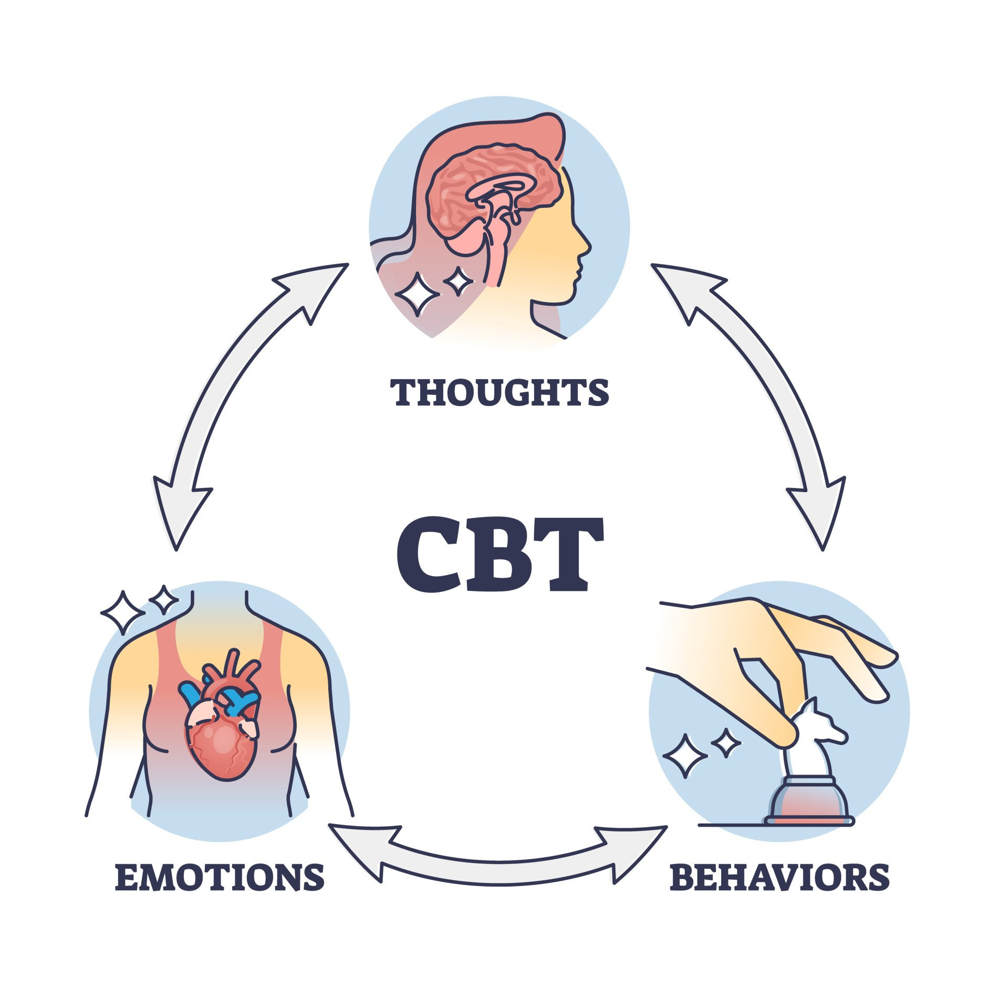

The cognitive behavioral therapy (CBT) triangle, commonly called the 'cognitive triangle,'' provides a structured framework to understand the interplay between thoughts, feelings, and behaviors.
Individuals can identify and avoid harmful patterns by recording and categorizing negative thoughts. While surface emotions might be apparent, deeper underlying emotions can influence reactions.
Addressing these root emotions and modifying thought patterns can lead to positive behavioral changes, aiding in treating mental health issues like anxiety or depression.
Situated at the top of the triangle, thoughts serve as the cognitive foundation. Research indicates that individuals produce thousands of thoughts daily.
Among these, cognitive distortions, or erroneous thinking patterns, can significantly influence one's perceptions and interpretations. Common distortions include:
Emotions are best managed through acceptance; understanding and validation can alleviate emotional intensity. Though originating in the brain, feelings manifest in the body, alerting us to potential issues or affirming positive situations.
To establish a healthy relationship with emotions, it’s vital to accept and validate them. This process can reduce their overpowering nature.
When managing challenging feelings, it's essential to acknowledge them, seek balance, and, if persistent, examine underlying thoughts that might reinforce them.
Behaviors are responses to stimuli and are influenced by thoughts and feelings. They can indicate an individual’s emotions, especially when not verbally expressed.
Cognitive Behavioral Therapy (CBT) can modify behaviors using techniques like behavioral activation, which aims to increase engagement in positive activities, and gradual exposure, which systematically introduces individuals to feared or avoided situations in a controlled manner.